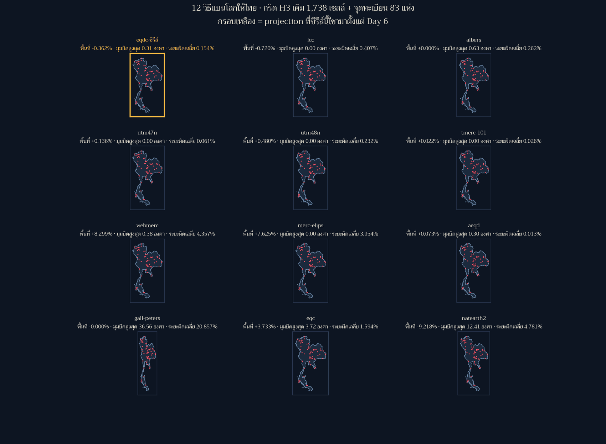
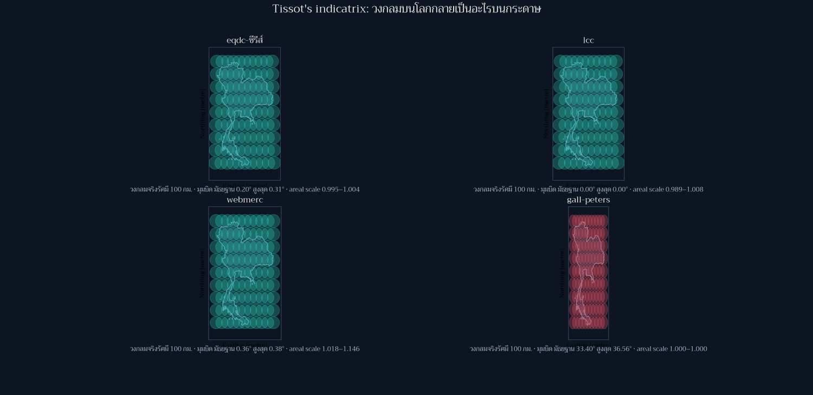
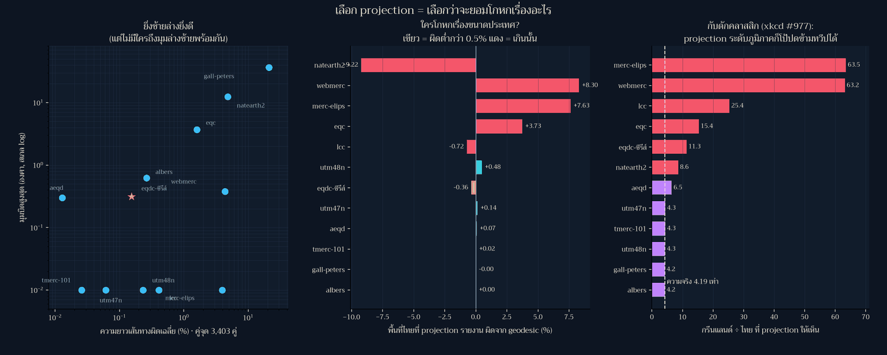

Day 22 · Projections — 12 วิธีแบนโลกให้ไทย และคำตอบว่า projection ที่ซีรีส์นี้ใชามาตั้งแต่ Day 6 โกหกเรื่องพื้นที่ไป 0.36% (กับบั๊กที่ทำให้ Mercator รักษามุมไม่ได้)

โจทย์ทางการวันนี้คือ “The different ways of representing a globe on a flat surface. What does your favourite map projection say about you?” (หัวข้อ Projections — ดึงข้อความมาจากหน้า 30daymapchallenge.com อ่านสด 19:50 น. ของวันที่ 22 พ.ย. ในโจทย์มีลิงก์ไปการ์ด xkcd #977 ที่ล้อการเถียงเรื่อง projection ว่าใครถูก)
เหตุผลที่โพสต์นี้ต้องมีอยู่ คือประโยคที่สองของโจทย์ — เพราะซีรีส์นี้ใช้ projection ตัวเดียว มาตั้งแต่ Day 6 — Equidistant Conic ขนานมาตรฐาน 8°/20° จุดศูนย์กลางลองจิจูด 101° ผมวาดแผนที่ไทยด้วยมันมาตั้งแต่ Day 6 โดยไม่เคยถามว่ามันโกหกอะไรไว้บ้าง วันนี้จึงเอามันมาวัดจริงจัง พร้อมอีก 11 วิธี และถามกลับว่า “ตัวเลขที่โพสต์ไปก่อนหน้าผิดไปเท่าไหร่”
ตั้งสเปกก่อน: เทียบกับอะไร
กติกาข้อเดียวที่บังคับทั้งโพสต์: ทุกตัวเลขเทียบกับ geodesic บนทรงรี WGS84 ที่คำนวณด้วย Geod(ellps="WGS84").geometry_area_perimeter() ของวงเดียวกันนั้น ไม่มีการเทียบ projection กับ projection เพราะแบบนั้นคือการเลือกพยานที่เข้าข้างตัวเอง
| geodesic reference (Natural Earth 10m, WGS84) | ค่า |
|---|---|
| พื้นที่ประเทศไทย | 514,453.7 ตร.กม. |
| พื้นที่กรีนแลนด์ | 2,154,380.8 ตร.กม. |
| กรีนแลนด์ ÷ ไทย (ความจริง) | 4.1877 เท่า |
| เซลล์ H3 res 5 ในกริด Day 3 (1,738 เซลล์) | ค่าเฉลี่ย 286.931 · ต่ำสุด 77.366 · สูงสุด 303.042 ตร.กม. |
| คู่จุดทะเบียนแหล่งฟ้ามืด 83 แห่ง | 3,403 คู่ · ระยะ geodesic มัธยฐาน 430.5 กม. |
หมายเหตุที่ควรบอกก่อนเริ่ม: เส้นขอบประเทศมาจาก Natural Earth 10m ไม่ใช่แนวเขตกรมที่ดิน ตัวเลขทางราชการที่อ้างกันทั่วไปคือ 513,120 ตร.กม. ซึ่ง geodesic ของเราใหญ่กว่า +0.2599% (ผลต่างระดับเดียวกันกับที่ projection สร้างให้ — ตารางข้างล่างจึงใช้เทียบ ระหว่าง projection ไม่ใช่เอายอดเงินไปเทียบกับเลขราชการ)
ตัววัดที่ใช้ 5 เกณฑ์ (นิยามเดียวกับใน day22_stats.json):
| เกณฑ์ | วัดอย่างไร |
|---|---|
| พื้นที่ | พื้นที่ polygon ใน projection ÷ พื้นที่ geodesic ของ polygon เดียวกัน − 1 |
| มุม | Tissot’s indicatrix: Jacobian ของ projection ที่ 182 จุด (กริด 9×11 ครอบคลุมกล่องไทย + 83 จุดทะเบียน) แล้ว SVD → a, b คือ scale ตามแกนหลัก · ω = 2·asin((a−b)/(a+b)) คือมุมบิดสูงสุด (max) ที่จุดนั้น |
| ระยะ | ระยะตรงระหว่าง 83 จุดทะเบียน 3,403 คู่บนแผนที่ หารด้วยระยะ geodesic ของคู่เดียวกัน |
| ทิศ | azimuth จากจุดกลางกริด (15.112°N 101.020°E) ไปยังทุกจุด บนแผนที่ − บนทรงรี |
| คำสัญญาของชื่อ | h = scale ตามแนวเมอริเดียน · k = ตามแนวขนาน — ตัวที่บอกว่าการันตีในชื่อ projection เป็นจริงแค่ไหน |
12 วิธีแบนโลก

aeqd (Azimuthal Equidistant) ตั้งศูนย์กลางที่จุดกลางของกริด Day 3 เองไม่ใช่ที่เมืองหลวง มันชนะสองเกณฑ์คือ “ระยะ” (0.0129%) กับ “ทิศ” (0.0000°) — และนี่คือ projection ที่ผม ควรใช้ ถ้าจะวาด rose of the Leonids ของ Day 17 จริง ๆ เพราะสิ่งที่ rose ต้องการคือ ทิศกับระยะจากจุดกลาง ซึ่งเป็นสองสิ่งที่ aeqd ให้ตรงโดยนิยาม (Day 17 วันนั้นคำนวณ azimuth/distances แบบ geodesic บนพื้นหลัง eqdc ไม่ได้วาดเป็น aeqd)
| projection | พื้นที่ไทยที่รายงาน | ผิดจากจริง | ω สูงสุด |
ระยะผิดเฉลี่ย | ทิศผิดสูงสุด |
|---|---|---|---|---|---|
| eqdc-ซีรีส์ (ตัวที่ใช้จริง) | 512,593.1 | −0.3617% | 0.3127° | 0.1543% | 0.1682° |
| lcc | 510,750.8 | −0.7198% | 0.0000° | 0.4070% | 0.0714° |
| albers | 514,453.8 | 0.0000% | 0.6254° | 0.2620% | 0.3230° |
| utm47n | 515,154.4 | +0.1362% | 0.0000° | 0.0615% | 0.5970° |
| utm48n | 516,923.6 | +0.4801% | 0.0000° | 0.2320% | 1.2297° |
| tmerc-101 | 514,565.4 | +0.0217% | 0.0000° | 0.0260% | 0.0597° |
| webmerc | 557,147.9 | +8.2990% | 0.3807° | 4.3574% | 0.5652° |
| merc-elips | 553,682.4 | +7.6253% | 0.0000° | 3.9544% | 0.5888° |
| aeqd | 514,829.1 | +0.0730% | 0.3021° | 0.0129% | 0.0000° |
| gall-peters | 514,453.5 | −0.0000% | 36.5639° | 20.8572% | 17.0395° |
| eqc | 533,657.1 | +3.7328% | 3.7242° | 1.5936% | 1.6870° |
| natearth2 | 467,033.2 | −9.2176% | 12.4063° | 4.7809% | 9.1864° |
สรุปจากตาราง: 7 จาก 12 วิธี ผิดไม่เกิน 0.5% เรื่องพื้นที่ ค่ามัธยฐานของ ความผิดพลาดสัมบูรณ์คือ 0.4209% — ตัวที่หลุดคือ Mercator สองตัว (บวม 7.6–8.3%) กับ Natural Earth II (แฟบ 9.2%) ซึ่งเป็น projection ทั้งโลก ไม่ได้ตั้งใจให้ประเทศเดียว
มุม: คำว่า “conformal” ทำงานจริงไหม

วงกลมจริงรัศมี 100 กม. บนพื้นผิว ถูกวาดเป็น ellipse ในแต่ละ projection ผลที่ได้ตรงตามทฤษฎีเป๊ะ: มี 5 วิธีที่ให้ ω = 0.0000° (lcc, utm47n, utm48n, tmerc-101, merc-elips) ส่วน albers กับ gall-peters ให้ areal scale = 1.00000 ทุกจุด ตามสัญญา equal-area แต่ gall-peters ต้องแลกมาด้วยมุมบิดสูงสุด 36.5639° และทิศเพี้ยนถึง 17.0395° — นี่คือราคาจริงของ “พื้นที่ถูกทุกแห่งแต่รูปเสียหมด”
เคสที่สนุกที่สุดคือ webmerc: มันคือ conformal ตามทฤษฎี แต่ ω ที่วัดได้ = 0.3807° ไม่ใช่ 0 เหตุผลไม่ใช่บั๊ก — EPSG:3857 จำลองโลกเป็น ทรงกลม ขณะที่ค่าจริงที่เราวัดกันทั้งโพสต์อยู่บน ทรงรี WGS84 ความต่างของสองแบบจำลองโผล่ออกมาเป็น angular deformation เล็กน้อย ซึ่ง Mercator บนทรงรี (EPSG:3395) ไม่มี (0.0000°)
ส่วน projection ที่ซีรีส์นี้ใช้อยู่: ω มัธยฐาน 0.1984° สูงสุด 0.3127° คือรักษา “ความตั้งฉากของกริด” ได้เกือบดีแต่ไม่ได้ perfect — และนี่คือตัวเลขที่บอกว่า แผนที่ทุกแผ่นที่ทำมาไม่ได้บิดจนกว่าเราจะวัดมันขึ้นมา
กับดักที่ xkcd ล้อ: “ตาเท่ากัน” ไม่เท่ากับ “ใหญ่เท่ากัน”

เอากรีนแลนด์ ÷ ไทย มาถาม projection แต่ละตัว (ความจริง 4.1877 เท่า)
- Albers กับ Gall–Peters ตอบ 4.1877 เท่า — ตรงเป๊ะ เพราะรักษาพื้นที่
- Web Mercator ตอบ 63.1565 เท่า · Mercator ทรงรีตอบ 63.5257 เท่า
- Equirectangular 15.3626 เท่า · LCC 25.3660 เท่า · eqdc ที่เราใช้ 11.3500 เท่า
ข้อสุดท้ายต้องบอกให้ตรง: eqdc/lcc เป็น conic ระดับภูมิภาค เอามาวัดข้ามทวีปไม่มีความหมายตั้งแต่ต้น (กรีนแลนด์ไปอยู่ไกลจาก standard parallels จนบิดมหาศาล) ตัวเลข 11.3500 กับ 25.3660 จึงเป็น คำเตือน ไม่ใช่ผลค้นพบ บทเรียนที่ใช้ได้จริงคือ: ถ้าจะเถียงเรื่องขนาดข้ามทวีป ต้องใช้ projection ทั้งโลกเท่านั้น และในบรรดา projection ทั้งโลกที่มี equal-area เป็นคุณสมบัติ กรีนแลนด์ ÷ ไทย จะตอบได้ 4.1877 ทุกครั้ง
๑. บั๊กที่เกือบทำให้ “Mercator ไม่รักษามุม” ขึ้นเว็บ
รันแรกได้ผลแบบที่ขัดทฤษฎีชัด ๆ: ω ของทุก projection เป็น ~179.8° หมด รวม Mercator และ Lambert ซึ่งต้องได้ 0° — ค่า 12 ตัวกระจายกันเพียง 0.027°
guard_variance ใน tools/guards.py (ฟังก์ชันที่ตั้งไว้จับ “ตัวเลขที่เท่ากันผิดปกติ”) ฟ้องทันทีที่ผมรันจบทั้งรอบ
ต้นเหตุไม่ใช่คณิตศาสตร์ แต่เป็นลำดับ argument:
# ผิด — เรียง (lons, lats, azimuths, distances) ไม่ถูก
lons, lats, _ = GEOD.fwd(np.full(NZIP, lon), np.full(NZIP, la0),
np.full(NZIP, R_KM * 1000.0), np.degrees(brg))Geod.fwd รับ (lons, lats, azimuths, distances) ผมใส่ระยะทาง 100,000 ม. ไปในตำแหน่ง azimuth และใส่ค่าทิศทาง (0 ถึง 360) ในตำแหน่งระยะทาง “วงกลมรัศมี 100 กม.” จึงกลายเป็นกลุ่มจุดรัศมีประมาณ 6 เมตร covariance ที่ใช้หาแกน ellipse จึงบีบเป็นเส้น → b ≈ 0 → ω = 180° ทุกตัว
วิธีแก้ทำให้ตัวเลขดีขึ้นด้วย: เลิกวัดจากวงกลม แล้วคำนวณ Jacobian ของ projection ด้วย central difference 0.02° แล้วทำ SVD ซึ่งตรงนิยาม textbook ของ Tissot กว่า และไม่ขึ้นกับจำนวนซี่ของวงกลมเลย — a, b ที่รายงานคือแกนของ ellipse ที่เกิดจาก การแปลง “วงกลมหน่วยในระนาบสัมผัสพื้นผิว” ซึ่งเป็นนิยามของมันเอง หลังแก้ lcc ให้ ω = 0.0000° ตรงตามทฤษฎี (ทั้งสิบสองตัวก่อนแก้ได้ค่าใกล้ 179.8° หมด — ซึ่งไม่มี projection ไหนในธรรมชาติควรได้) และค่าที่ผิดทั้ง 12 ตัวถูกเขียนทับใน day22_stats.json ผ่านบล็อก bug_found (มี observed_omega_wrong_deg = 179.8 กับ observed_spread_deg = 0.027 เก็บไว้ เพื่อที่คนอ่านจะตรวจซ้ำได้ว่าบั๊กมีอยู่จริง ไม่ใช่เรื่องที่เล่าทีหลัง)
และเพราะ guard ตัวเดิมจับกรณี “ω เท่ากันหมดแต่ไม่ใกล้ 180” ไม่ได้ ผมเพิ่ม assert ใหม่ในสคริปต์: ทุก projection ที่อ้างว่า conformal (lcc, utm47n, utm48n, tmerc-101, merc-elips) ต้องมี ω สูงสุดต่ำกว่า 0.005° ไม่อย่างนั้นให้รันล้ม — บทเรียนซ้ำของซีรีส์นี้: assert ต้องเกิดหลังจากความเข้าใจใหม่ ไม่ใช่ตอนเขียนโค้ดครั้งแรก
๒. ปิดเคส 13% ของ Day 20
Day 20 ทิ้งคำถามไว้ประโยคเดียว: เซลล์ H3 res 5 ในไทยวัดได้เฉลี่ย 285.884 ตร.กม. ใหญ่กว่า average_hexagon_area(5) = 252.904 ตร.กม. ราว 13% ตอนนั้นผมแค่บอกว่า “ใช้ตัวเลขที่วัดจริงแทน nominal” แต่ไม่ได้อธิบายว่า 13% มาจากไหน
วันนี้อุปกรณ์พร้อมแล้ว (geodesic + H3 เอง + projection) จึงแยกองค์ประกอบได้:
| องค์ประกอบ | ค่า |
|---|---|
| projection (eqdc เทียบ geodesic) | −0.365% |
| H3 ใช้ทรงกลม แต่เราวัดบนทรงรี | −3.172% |
| ค่า nominal เป็นค่าเฉลี่ยทั่วโลก ไม่ใช่ค่าเฉลี่ยแถวละติจูดเรา | +17.171% |
| คูณกลับทั้งสามชิ้น | +13.041% |
| ช่องว่างจริงที่ Day 20 รายงาน | +13.041% |
พูดใหม่ให้เป็นประโยค: 13% นั้นไม่ได้มาจาก projection เลย (projection มีส่วนแค่ 0.365%) มันมาจากข้อเท็จจริงสองข้อ — H3 คำนวณบนทรงกลม (−3.172%) และ average_hexagon_area() เป็นค่าเฉลี่ยทั่วโลก ซึ่งเซลล์แถวละติจูดต่ำ อย่างประเทศไทย (6–20°N) ใหญ่กว่าค่าเฉลี่ยนั้นมาก หลักฐานคือ cell_area() รายเซลล์ของไทยอยู่ระหว่าง 287.782–304.383 ตร.กม. ไม่มีสักเซลล์ที่ใกล้ 252.904 และสหสัมพันธ์ Spearman ระหว่างพื้นที่เซลล์ (แบบทรงกลมของ H3) กับละติจูด ภายในกริดเดียวกันคือ −0.7977 (เหนือขึ้น = เซลล์เล็กลง)
ของแถมของการตรวจซ้ำ: day20_reproduced = true — วัด eqdc ซ้ำวันนี้ได้ ค่าเฉลี่ย 285.884 เท่ากับที่ Day 20 รายงานเป๊ะ และพื้นที่ไทยใน eqdc ได้ 512,593.1 ตรงกับที่ใช้ใน Day 10/12/14 (traceable ครบ)
projection ของผมบอกอะไรเกี่ยวกับผม
จัดอันดับ 12 วิธีด้วย 5 เกณฑ์ (อันดับ 1 = ดีที่สุด):
| พื้นที่ | มุม | ระยะ | ทิศ | Scale ตามเมอริเดียน | รวมอันดับ | |
|---|---|---|---|---|---|---|
| eqdc-ซีรีส์ | 6 | 7 | 4 | 4 | 1 | 22 |
| tmerc-101 | 3 | 3 | 2 | 2 | 4 | 14 |
| aeqd | 4 | 6 | 1 | 1 | 3 | 15 |
| lcc | 8 | 1 | 7 | 3 | 5 | 24 |
| albers | 1 | 9 | 6 | 5 | 6 | 27 |
| gall-peters | 2 | 12 | 12 | 12 | 12 | 50 |
| natearth2 | 12 | 11 | 11 | 11 | 9 | 54 |
อ่านตารางนี้แบบซื่อ ๆ: projection ที่ผมใช้อยู่ ชนะเกณฑ์เดียว คือ ns_scale_dev_max = 0.00000 — ระยะตามแนวเมอริเดียนจริง 100% ทุกจุดใน 182 จุด (มีแค่ eqdc กับ eqc เท่านั้นที่ทำได้) เกณฑ์ที่เหลือมันอยู่อันดับกลาง ๆ และคนที่ชนะรวมอันดับคือ tmerc-101 Transverse Mercator ที่ตั้ง central meridian เหนือกลางประเทศเราเอง (พื้นที่ผิด +0.0217%, ω 0.0000°, ระยะผิด 0.0260%)
สรุปว่า projection ของผมบอกอะไร? สามอย่าง
- ผมเลือกตามธรรมเนียม ไม่ใช่ตามการวัด — conic + standard parallels 8°/20° คือคำตอบแบบตำราสำหรับประเทศที่ยืดยาวเหนือ-ใต้ และมันไม่ได้ ผิด (พื้นที่หายไป 0.36% มุมบิด 0.31°) แค่ไม่ได้ ดีที่สุด
- ผมให้น้ำหนักกับ “ระยะทาง” มากกว่า “ขนาด” — ซีรีส์นี้วัดระยะจากจุดทะเบียนถึงถนน ถึงถนน ถึงเซลล์ที่ใกล้ที่สุดมาตลอด (Day 3, 9, 16) ซึ่งคือสิ่งที่ eqdc สัญญา และมันรักษาข้อสัญญานั้นจริงแบบตัวเลขศูนย์ทศนิยมห้าตำแหน่ง
- ผมปล่อยผ่าน 2 เรื่องที่ควรตรวจตั้งนานแล้ว — ไม่เคยตรวจ geodesic reference (จึงเข้าใจผิดเรื่อง 13% มาตั้งแต่วันนั้น และใช้ Mercator ทั้งเว็บ (webmerc) ในหัวโดยลืมว่าตัวเลข 8.299% ที่มันเติมให้ประเทศไทยนั้น มากกว่า error ทุกอย่างที่ projection ระดับภูมิภาคสร้างขึ้น
ถ้าให้เลือกใหม่เพื่อทำซีรีส์นี้ต่อ: tmerc-101 สำหรับแผนที่ประเทศ (ชนะ 4 จาก 5 เกณฑ์เมื่อคิดรวม) และ albers ทุกครั้งที่รายงาน “เนื้อที่” เพราะมันให้ 0.0000% แบบไม่ต้องอธิบาอะไรเลย — แต่ผมจะไม่เปลี่ยน เพราะทุกแผนที่ของซีรีส์นี้ใช้ eqdc และโพสต์นี้คือหลักฐานว่า มันสร้าง error ให้เรากี่เปอร์เซ็นต์ ไม่ใช่ทิ้งงานเก่าแล้วเริ่มใหม่
วิธีทำแบบย่อ
- อ่านกริด H3 res 5 จาก Day 3 (1,738 เซลล์) + ขอบประเทศ Natural Earth 10m
- จุดทะเบียน 83 แห่งจากไฟล์ชุดเดิมที่ทั้งซีรีส์ใช้
- คำนวณ reference บน WGS84:
Geod(ellps="WGS84").geometry_area_perimeter()ของ polygon จริง,line_lengthsของทุกคู่จุดทะเบียน (3,403 คู่) - สร้าง 12 projection ด้วย proj4 string + lookup EPSG (32647, 32648, 3395, 3857)
- ต่อ projection: reproject polygon → คิดพื้นที่ → หาร reference · reproject 1,738 เซลล์ → ดูการกระจายของ error (ไม่แค่ค่าเฉลี่ย) · สแกน 182 จุดด้วย Jacobian (central difference 0.02°) → SVD →
a, b, ω, h, k, areal· reproject จุดทะเบียนแล้ววัดคู่ 3,403 คู่ · วัด azimuth จากจุดกลาง - จัดอันดับ 5 เกณฑ์แล้วรวมเป็น rank_sum เพื่อตอบคำถาม “projection ของคุณบอกอะไร”
- แยกองค์ประกอบตัวเลข 13% ของ Day 20 เป็น projection × ทรงกลม/ทรงรี × ค่าเฉลี่ยละติจูด แล้วคูณกลับว่าครบ 13.041% พอดี
- assert ที่ใส่เพิ่มหลังเจอบั๊ก: conformal ต้อง ω < 0.005° · albers ต้อง พื้นที่ error < 0.005% · eqdc ต้อง
ns_scale_dev_max < 1e-4· ผลคูณสามองค์ประกอบต้องตรงกับช่องว่างจริง · และเลข Day 20 ต้อง reproduce ได้
ข้อจำกัดที่ต้องบอกตรง ๆ
- grid Tissot 182 จุด (99 กริด + 83 ทะเบียน) ไม่ครอบคลุมเกาะ/ชายฝั่งทุกละติจูด
ωที่รายงานจึงเป็น “สูงสุดจากที่สุ่มกริดไว้” ไม่ใช่ supremum ของทั้ง projection - central difference 0.02° (ประมาณ 2 กม.) เป็นค่า step ที่ผมเลือก step ใหญ่ไปจะปน curvature, เล็กไปจะจม numerical noise — ไม่ได้ทดสอบ step size อื่น
- aeqd ตั้งศูนย์กลางที่ centroid ของกริด Day 3 (15.112°N 101.020°E) ถ้าย้ายจุดกลาง ตัวเลข “ทิศผิด 0.0000°” จะเปลี่ยนทันที (เพราะเกณฑ์นี้วัดจากจุดนั้น)
- UTM มีเขตเดียวต่อ zone: utm47n ครอบคลุมไทยได้ทั้งประเทศแต่ utm48n ไม่ใช่ ตัวเลือจริงของคนทำแผนที่ไทย การใส่มาเพื่อแสดง edge distortion เท่านั้น
- เทียบตัวเลขข้ามทวีปจาก projection ระดับภูมิภาคไม่ได้ — ค่า gl_th_ratio ของ eqdc/lcc ในที่นี้คือคำเตือน ไม่ใช่ผลสรุป (เขียนไว้ให้ชัดเพราะตารางอาจถูกตัดไปใช้ต่อ)
- ขอบประเทศมาจาก Natural Earth 10m ซึ่งต่างจากตัวเลขทางราชการ +0.2599% ใหญ่กว่าผลของ projection หลายตัวในตัวมันเอง
ไฟล์ประกอบ
- day22_twelve.png — 12 small multiples พร้อม error ราย panel (กรอบเหลือง = eqdc ที่ซีรีส์นี้ใช้)
- day22_tissot.png — Tissot’s indicatrix 4 panel: eqdc · lcc · webmerc · gall-peters
- day22_tradeoff.png — เกณฑ์ระยะทางเทียบกับเกณฑ์มุม, อันดับความเพี้ยนด้านพื้นที่, กับดักกรีนแลนด์
- day22_projections.csv — เมทริกซ์หลัก 12 แถว (ทุกตัวเลขในโพสต์อยู่ในนี้)
- day22_tissot.csv —
a, b, areal, ω, h, kรายจุด 182 จุด × 12 วิธี = 2,184 บรรทัด - day22_ranks.csv — อันดับ 5 เกณฑ์ + rank_sum
- day22_cells.csv — รายเซลล์ 1,738: พื้นที่ geodesic, พื้นที่ H3 (ทรงกลม), พื้นที่ใน eqdc / albers / utm47n / webmerc / gall-peters / aeqd / lcc พร้อมอัตราส่วน
- day22_stats.json — นิยามทั้งหมด +
bug_found+decomposition_of_day20external_reference+cross_check_day20


ไฟล์สคริปต์: tools/day22_projections.py (คำนวณ + วาด + referee ในไฟล์เดียว) และ notebooks/day22_projections.ipynb ที่สร้างจากไฟล์เดียวกัน
บทเรียน
- assert ต้องเขียนหลังเข้าใจ ไม่ใช่ก่อน — ผมมี guard 25 เคสใน
guards.pyแต่ไม่มีข้อไหนบอกว่า “conformal ต้องได้ ω เป็นศูนย์” จึงปล่อยให้บั๊ก ลำดับ argument ของGeod.fwdผลิตตัวเลขที่ผิดพร้อมกันทั้ง 12 ตัว โดยไม่มีตัวไหน “ดูเพี้ยน” ในสายตาคณิต — ดีที่มี guard_variance - guard ตัวเดียวจับบั๊กได้หนึ่งระดับ — ครึ่งแรกของบั๊ก (ω = 179.8° ทุกตัว) คือ “ค่าไม่กระจาย” ซึ่ง
guard_varianceเห็น · ครึ่งหลัง (กรณีที่ไม่เพี้ยนหนัก แต่ผิด criteria) ต้องใช้ domain assert เพิ่ม ซึ่งผมใส่ไว้แล้ว - ตัวเลขเก่าในซีรีส์ควรตรวจซ้ำได้ — ข้อดีของการเก็บทุกอย่างเป็น artifact คือ 13% ของ Day 20 วันนี้กลายเป็น “3 ชิ้นคูณกัน = 13.041%” ที่ปิดเคสได้ และ 285.884 / 512,593.1 ยัง reproduce ตรงเป๊ะ (ไม่มี drift)
- “ชื่อ projection” เป็นคำสัญญา ไม่ใช่ความจริง — equidistant ของ eqdc เป็นจริงเฉพาะตามแนวเมอริเดียน (dev 0.00000) และเป็นเท็จตามแนวขนาน (dev สูงสุด 0.00544 = 0.544%) การรายงานแบบไม่ระบุทิศคือวิธีหลอกตัวเองที่เสถียรที่สุด
- คำตอบของ “projection ของคุณบอกอะไรเกี่ยวกับคุณ” ควรวัดได้ ผมตอบว่า: ผมเลือกตามธรรมเนียม, ผมให้ค่ากับระยะทางมากกว่าขนาด และมี projection ที่ดีกว่า 4 ใน 5 เกณฑ์อยู่ห่างไปแค่การเปลี่ยน string หนึ่งบรรทัด